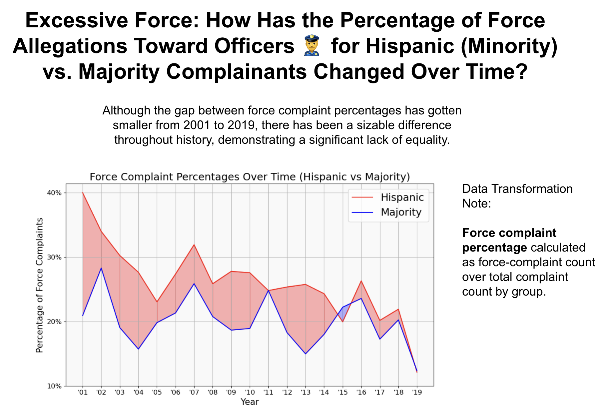
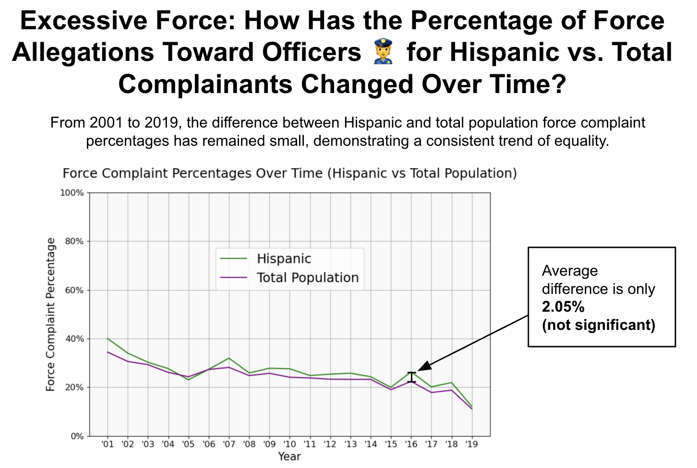

Proposition: Throughout history, Hispanic complainants have had a higher percentage of force complaints toward police officers compared to the overall population.
FOR the Proposition

Design Decisions and Rationale:
- Decision 1: Using Majority Group as a Comparison
Deceptive Score: 2
Majority is typically seen as the larger overall group, or rather, the ethnic majority in the population, which theoretically makes for a fine comparison. However, in the U.S., majority is actually defined as all white Americans, so I am effectively making a comparison between Hispanics and Whites, which is very deceiving. Since whites tend to have a lower force complaint percentage, this decision makes the gap between Hispanics and the majority seem larger than normal. I think it worked well because it creates a very clear trend in the visualization, but it is possible for readers to be confused by majority or question its use. I also considered using overall population or non-Hispanic population to compare, but neither showed as big of a gap. - Decision 2: Manipulating Y-axis Tick Scale
Deceptive Score: .5
I only used a range from 10% to 40% on the y-axis, which amplifies the data and trend demonstrated on the visualization. If I had used a larger range, the trend would seem less apparent or diminished. I think it worked well because the data fills out the entire graph nicely. In addition, I don't believe that it is very noticeabale, or if noticeable, not seen as very deceptive. I considered using a larger range, but it would not show the data as clearly. - Decision 3: Shading the Area between Lines
Deceptive Score: -1
In between the two lines, I shaded the area of the plot red (when Hispanic was above Majority) and blue otherwise. This decision is earnest, since it simply communicates an already preexisting trend within the data. The red color specifically helps the graph 'pop' and can also evoke a sense of anger or caution within the audience, which helps demonstrate the point in the visualization. I did consider a different shading color, but red seems to cover all the bases here.
Decision 4: Including Data From 2001 to 2019
Deceptive Score: -2
For the two visualizations, I included data from 2001 to 2019, since there were higher overall counts for complaints across these years. Overall, this decision is earnest since it uses a larger sample size. As I was reviewing visualization 1, I specifically thought about lowering the range to 2014, since the trend decreases from 2014 to 2019, but I decided that taking this data out might make the audience skeptical. Instead, I added an annotation at the top that accepts the decrease but still reinforces the overall argument.
Decision 5: Data Transformation Note
Deceptive Score: -2
For the note, I specifically mentioned how the data for force complaint percentage was derived. Overall, this decision is earnest because it effectively and honestly communicates a design choice to the reader, and thus, it works well. I also considered removing the annotation to keep the visual simpler, but I believe it is helpful for the reader to understand the data transformation used.
AGAINST the Proposition

Design Decisions and Rationale:
- Decision 1: Using All Groups as a Comparison to Hispanics
Deceptive Score: 1
Using all groups, or the overall population, as a comparison can be helpful, but it is deceptive because it is skewed by the Hispanic portion of the overall population. When comparing all groups, which includes the Hispanic population, compared to the Hispanic population itself, the gap between the two groups will be lessened because any variation in the Hispanic population will also be seen in the overall population. However, it works well to go against the proposition. I considered taking out the Hispanic population in the all groups section, but there would have been a larger gap. - Decision 2: Average Difference Annotation
Deceptive Score: .5
On the right side of the visualization, I included an annotation that describes the average difference between the two plots. It is a little deceptive, since I am using the phrasing 'not significant' without actually showing a p-value, but the difference is in fact very small. Overall, it helps drive the point across that the two groups are fairly similar over time. I also considered using an annotation for the max difference or the min difference, but average is more trustworthy overall. - Decision 3: Manipulating Y-axis Tick Scale
Deceptive Score: 1
I used the complete range from 0% to 100%, even though the actual data lies only between 10% and 40%. This decision helps further diminish any gap between the two lines, since the data is represented more narrowly. Overall, I think it works pretty well, since I moved the legend to cover up the empty space, but in comparison to the other plot, the audience may see that something is a little off. I also considered the original range, but this decision helps further demonstrate the lack of a difference between the two groups.
Decision 4: Using Force Complaint Percentages
Deceptive Score: -2
For both plots, I used force complaint percentages, which is an earnest design decision. I could have used overall counts, but this data would be very deceptive to the reader, since overall counts are influenced by the overall percentage of each group within the population. This comparison would communicate a difference in overall population's submitting complaints as opposed to a trend in the force-complaints within a population, which is what the guiding question asked. Thus, this decision is very helpful to the reader.
Decision 5: Green and Purple Colors
Deceptive Score: -1
I used a different color scheme, with green and purple, as opposed to the red and blue in the first plot. This decision works well, since purple and green are more calming colors than the red used in the first plot. It helps reinforce the lack of a trend shown in the image. I considered keeping the same color scheme from above, but it would unnecessarily create caution or alert when there is no trend to be observed.
Final Reflection
Overall, I found Project 2 to be challenging. Normally, we are called to make earnest design decisions that truthfully explain phenomena, so actively trying to maliciously manipulate the visualization just feels wrong. I found it interesting, however, to try and come up with different comparison groups such as Majority and All Groups, which are both deceptive in their own ways, while still trying to maintain the guise of an unbiasesd and trustworthy visualization. I was also surprised by the challenge of judging my decisions as earnest versus deceptive. For instance, changing the tick labels can be seen as earnest, as it helps readers more easily identify trends. But if used excessively, it can become a deceptive decision.
Now, I define ethical analysis and visualization as design decisions that are made with the intention of identifying the truth behind a certain question. My original proposition involves investigating Hispanic complaints compared to the general population. For visualization 1, I would qualify it overall as deceptive, since it is comparing Hispanics to whites, which is not directly answering the overarching question. The second visualization is less deceptive, as it does compare the overall population, albeit with some deceptive techniques. Thus, the bound between acceptable persuasive choices and misleading ones concerns the creator's adherence to the research question at stake. If the visualization decisions are made in cohesion with correctly answering the research question, they are acceptable, but if they are trying to answer a different question, or changing the intention of the question, they can be misleading. Of course, the original question can be deceptive, but that is an entirely different debate.